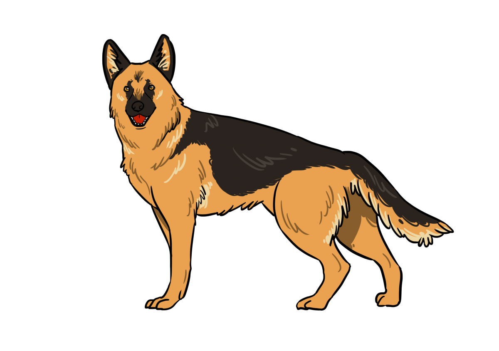
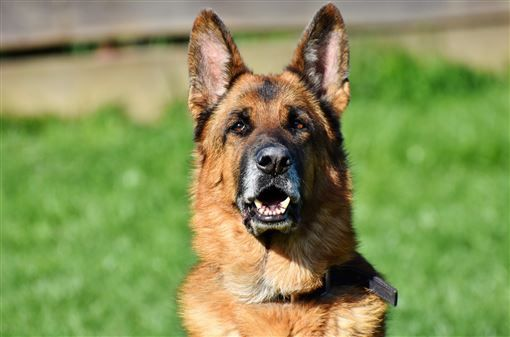
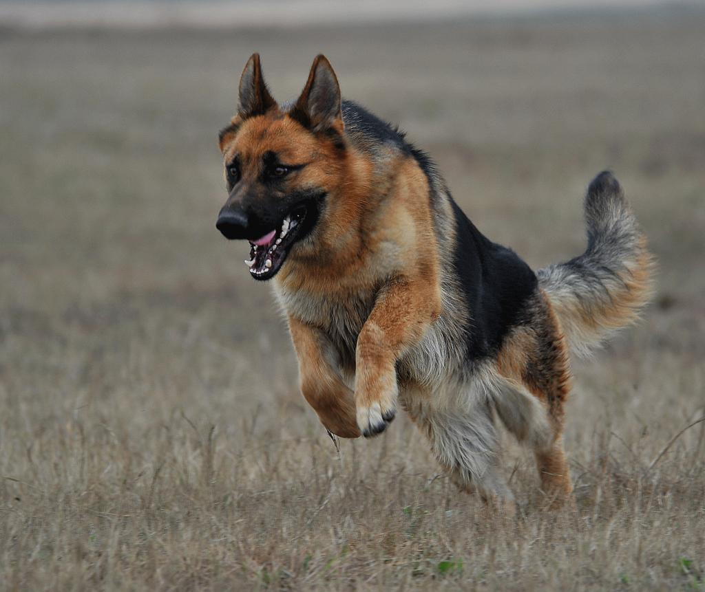
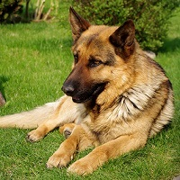

德國狼犬

外表
德國狼犬是一種大型、強壯和漂亮的狗，雙層毛皮且可以是短毛或長毛，有不同顏色，多數是黃褐色和棕色，但也有全黑、白或銀色，德國狼犬的頭部線條簡潔，結實。眼睛中等大小，普遍為杏仁形，位置微傾。腰部強壯，臀部長而傾斜。尾巴長，毛髮濃密，位置較低。
性格
對主人忠誠，勇敢，不固執。經常採取比較直接的行動，狡猾的性格相對少見。在一般情況下，或者不涉及其工作內容，很少表現敵意。從不主動欺負弱小。德國狼犬性格高傲，冷漠。陌生人很難與其建立良好關係，如其受到其他犬類的冒犯，除非是同樣強壯的犬類，德國牧羊犬通常會不予理睬。如吉娃娃之類的小型犬不停的對其吠叫，德國狼犬一般會選擇無視、離開，或者嚇唬一下。幾乎不會抬起爪子教訓對方一頓。不欺凌弱小這種性格似乎是其天生具備的，拋開心理素質不良等問題，基本德國牧羊犬都具備這種素質。
歷史
德國狼犬原產於德國。於1880年，德國狼犬已經在德國各地固定下來，並作為牧羊犬使用。在第一次世界大戰期間被德軍募集，作為軍犬隨軍。由德軍取長補短培育後，基本定型。因為體型高大，外觀威猛，並且具備極強的工作能力，因此在世界多處範圍以警犬、搜救犬、導盲犬、牧羊犬、觀賞犬以及家養寵物犬等身份活躍。
飼養注意事項
秋季空氣容易引起皮膚乾燥或其他皮膚疾病
為胃扭轉、胃擴張好發犬種
容易有大型犬常見問題：髖關節發育不全症


